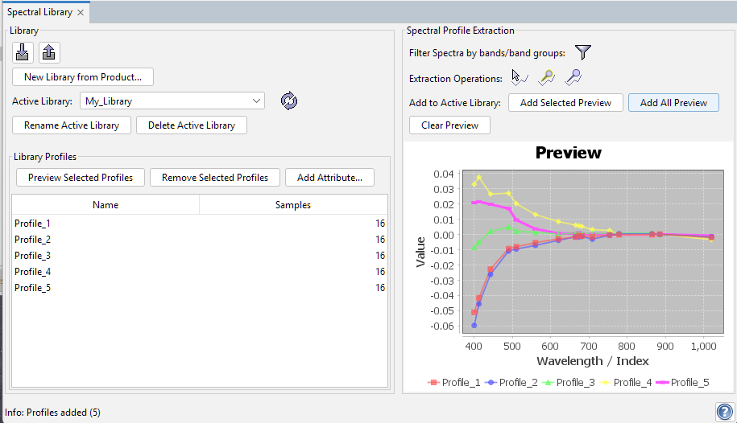

The Spectral Library Tool lets you extract spectral profiles from products (cursor / pins),
preview them, and store them in spectral libraries for later reuse.
A click on the
Selecting "Spectral Library"
from the View --> Tool Windows menu opens the tool window.

The tool window is split into two main areas:
- Library - manages spectral libraries and stored profiles (add/remove/rename, attributes, import/export).
- Spectral Profile Extraction - shows extracted spectral profiles (e.g. from cursor position or pins).
Workflow
The Spectral Library Tool is designed around the concept of an active spectral library.
The active library defines the wavelength axis (band set) used for preview and storage of spectral profiles.
Therefore, the first step is always to make sure a library is available and active.
-
Create or import a library
Start by either importing an existing library from file, or creating a new one from an open product.
Creating a library from a product initializes the library axis from the product's spectral bands.
-
Select the active library
Use the library combo box to switch between all libraries currently held in memory.
The selected library becomes the active library and is used as target for profile storage and preview.
An active library can be renamed or removed from memory.
-
Manage stored profiles
All profiles contained in the active library are listed in the profiles table.
Selected table entries can be deleted from the active library and can be previewed in the chart.
-
Configure extraction (requires an open Product Scene View)
The Spectral Profile Extraction panel is only useful when a library is active because the tool needs a
wavelength axis for display and storage.
To configure filters and to perform extraction operations, a Product Scene View must be open so the tool can
derive the available spectral bands and read pixel spectra.
-
Filter the band set
You can limit the extraction and display to band groups or to individual bands.
This is helpful when products contain many bands (e.g. multiple resolutions or derived bands) and you only want a
consistent subset.
-
Extract spectral profiles
Spectra can be extracted
(a) via a cursor click in the Product Scene View, or
(b) from pins that have been placed in the view (selected pins or all pins).
The extracted profiles appear in the preview chart.
-
Preview and store results
From the chart you can either add all currently displayed profiles to the active library,
or select a single profile in the chart and add only that one.
The preview can be cleared by removing the currently displayed profiles from the chart, which resets the preview area.
Custom Attributes
Spectral profiles may carry additional metadata beyond name and spectrum values.
The tool supports custom attributes that can be defined per library and shown as additional columns in the profiles table.
-
Define attributes - Add new attributes to the active library (e.g. material name, class, site, instrument setup).
Attributes can use different data types (e.g. strings, numbers, booleans, ...) and may provide default values.
-
Edit values - Attribute values are editable directly in the profiles table for each stored profile.
This allows you to curate libraries after importing or extracting new profiles.
-
Table visibility - Attributes are displayed as columns to support quick inspection, sorting, and comparison of profiles.
File Formats
Libraries can be imported and exported in common formats. The primary goal is interoperability with established tooling
while still allowing SNAP-specific extensions where needed.
-
ENVI Spectral Library (SLI) - A widely used binary+header format where spectra are stored as rows sharing a common
wavelength axis.
-
CSV-based exchange - Custom attributes can be preserved through a CSV-based exchange format that stores spectra
together with attribute columns.
Tool Buttons
In the following the main tool buttons are explained.
 |
Import new library from file.
|
 |
Export active library to file.
|
 |
Refresh active library and profiles table.
|
 |
Configure bands/band group selection for spectra retrieval.
|
 |
Extract spectral profile through a cursor click in Product Scene View.
|
 |
Extract spectral profile for selected pins.
|
 |
Extract spectral profiles for all pins.
|
 |
Displays this help page.
|